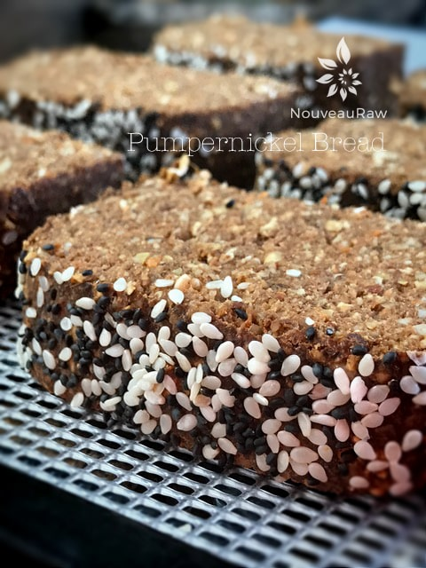

Pumpernickel Bread

~ raw, vegan, gluten-free ~
Pumpernickel is traditionally a dense, slightly sweet bread that is made with coarsely ground rye. Well, I can’t say that there is anything “traditional” about the ingredients used in this recipe, but I promise you this… it doesn’t lack even a bit in the flavor department.
The look, texture, smell, and taste remind me precisely of pumpernickel bread. The three most essential ingredients that give this recipe the pumpernickel flavor are the caraway seeds, espresso powder, and cacao.
If you are not able to eat oats, you can use raw buckwheat that has been sprouted, dehydrated, and ground into flour. Or you could even use more almonds.
The psyllium husks give the bread that great spongy texture, and I don’t recommend omitting it; you can, if you want, be aware that the composition will change.
I also used the almond pulp in the recipe; this is a by-product of making almond milk. I highly recommend it because it helps the bread’s texture as well.
If you try something else out instead, keep me posted on how it goes. I spent a great deal of time on fine-tuning this recipe, so I encourage you to make it as is the first time around, then experiment from there if you wish.
I paired this bread with my Vegan Leek & Herb Cheese, and it was downright delicious!! I hope you give this recipe a try. Many blessings and joy in the kitchen. amie Sue
 Ingredients:
Ingredients:
yields 1 loaf
- 1 cup rolled, gluten-free oats, soaked & dehydrated
- 1 cup raw almonds, soaked & dehydrated
- 1/3 cup flax seeds, ground
- 3 Tbsp psyllium husks, ground to a powder
- 3 Tbsp caraway seeds, fresh ground
- 1 Tbsp instant espresso powder
- 1/4 cup raw cacao powder
- 1/4 cup raw coconut crystals
- 1 tsp garlic powder
- 1 1/2 tsp Himalayan pink salt
- 2 cups packed, moist almond pulp
- 1 cup shredded zucchini
- 1/2 cup carrot juice
- 6 Tbsp raw agave nectar or maple syrup
Preparation:
- In the food processor, fitted with the “S” blade, combine the oats and almonds, processing until they are a small mealy texture.
- Add flax, psyllium, caraway, espresso powder, cacao, coconut crystals, garlic, and salt. Pulse together and set aside.
- In a large mixing bowl, combine the almond pulp, zucchini, carrot juice, and sweetener. Mix well with hands to blend everything together.
- To make the sugar replace the 6 Tbsp of liquid sweetener with 1/4 tsp Liquid NuNatural Stevia + 1/2 cup more of carrot juice.
- Add the dry ingredients to the mixing bowl and mix well.
- On a cutting board or piece of parchment paper, place the dough in the center and shape into a log. Sprinkle the top with black and white sesame seeds.
- If you have the time, I recommend that you cover the dough with plastic wrap and place in the fridge overnight, so the flavors have time to meld.
- If you don’t have the time, proceed with step 6.
- Dehydrate at 145 degrees for 1 hour. Remove and place on a cutting board and cut into thin slices. Place each one flat on the mesh sheet.
- Continue to dehydrate at 115 degrees for 4+/- hours. Until firm on the outside but a little moisture left in the center.
- Allow cooling before wrapping up. You can store the bread on the counter for several days but to extend the shelf-life, place in the fridge. This bread does freeze well and should keep up to 3 months.
The Institute of Culinary Ingredients™
- To learn more about maple syrup by clicking (here).
- What is Himalayan pink salt, and does it matter? Click (here) to read more about it.
- Are oats gluten-free? Yes, read more about that (here).
- Are oats raw? Yes, they can be found. Click (here) to learn more.
- Do I need to soak and dehydrate oats? Not required but recommended. Click (here) to see why.
- Learn how to grind your own flaxseeds for ultimate freshness and nutrition. Click (here).
- How does psyllium work in a recipe? Learn more (here).
Culinary Explanations:
- Why do I start the dehydrator at 145 degrees (F)? Click (here) to learn the reason behind this.
- When working with fresh ingredients, it is essential to taste test as you build a recipe. Learn why (here).
- Don’t own a dehydrator? Learn how to use your oven (here). I do, however honestly believe that it is a worthwhile investment. Click (here) to learn what I use.
© AmieSue.com